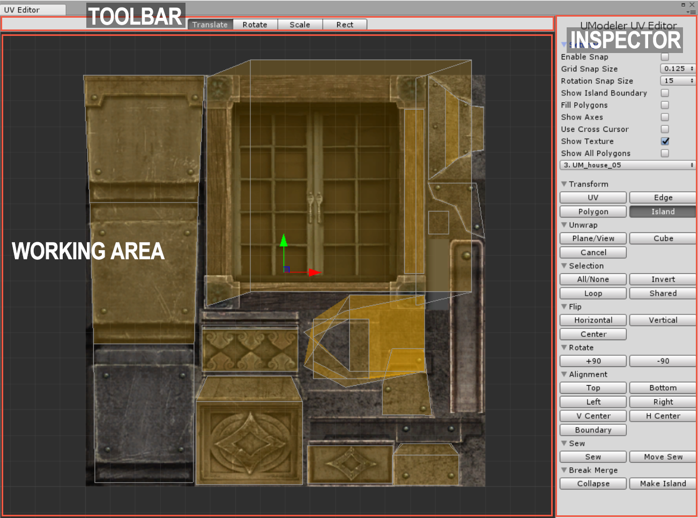

Overview¶
There are two ways of running UVEditor as follows.• SelectTools > UModeler > Open UVEditorin the upper menu or• Click onOpen UVEditorinSurfacegroup on the UModeler inspector.UVEditor with a UV map
The UVEditor looks like the upper image and consists of three areas.• Working Area - This is used for viewing and editing the UVs.• Toolbar - This is located on the top of the window, which used for choosing gizmo type.• Inspector - Various tools and settings necessary to unwrap and edit.
{kind=link}
Automatic UV and Manual UV¶
The polygons created in UModeler basically have UVs, which have tiling charactericstic, generated automatically based on position and normal of each vertex. From UModeler 2.0 those UVs can be unwrapped and edited manually using UVEditor. Both types of UVs can exist in one mesh at the same time.
Keyboard¶
W |
Translate Gizmo |
E |
Rotate Gizmo |
R |
Scale Gizmo |
T |
Rect Gizmo |
CTRL+Z |
Undo |
CTRL+Y |
Redo |
Holding SHIFT |
Separate Transform |
Holding CTRL |
Continuous Selection |
Getting Started¶

Unwrapping the selected polygons and basic demo to show how to edit UVs
The process to get started on using UVEditor is as follows.• Open UVEditor by clicking onOpen UVEditorin the inspector of UModeler.• Select several polygons in the scene view.• SelectPlane/VieworCubebutton on the inspector in UV Editor.• Click onUnwrapbutton in the property group.• Now you can select Vertex/Edge/Polygon in UVEditor and edit them.